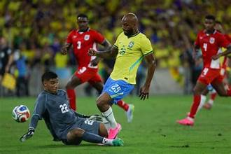

Brasil conquista uma vitória esmagadora contra o Panamá

Brasil ganha de 6 a 2 contra a seleção do Panamá
BRA 6-2 PAN
V.Júnior 2'
Casemiro 39'
Rayan 53'
L.Paqueta 60'
Igor Thiago 63' (P)
D.Oliveira 81'
M.Cunha 14' (GC)
Carlos Harvey 84'
A Situação de Neymar
Desfalque Confirmado: O camisa 10 sofreu uma lesão muscular de grau 2 na panturrilha direita.
O Jogo de Hoje: Brasil x Egito
- Escalação e Testes: Após golear o Panamá por 6 a 2, o técnico fará alterações pontuais.
Nomes como Marquinhos e Gabriel Magalhães retornam à zaga, enquanto Douglas Santos ganha chance na lateral esquerda. - Ataque em Alta: Sem Neymar, o poder ofensivo deve ser liderado por Lucas Paquetá, Endrick e Igor Thiago, que ganharam
espaço e têm sido elogiados pela imprensa internacional na preparação técnica. - Onde assistir: A partida terá transmissão ao vivo pela TV Globo, SporTV e no GeTV no YouTube a partir das 19h.